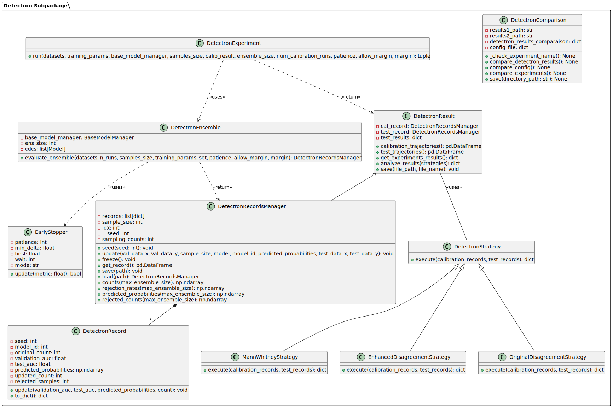

detectron subpackage
Overview
The detectron subpackage is a modular and enhanced implementation of the Detectron method, as described in the paper “Ginsberg, T., Liang, Z., & Krishnan, R. G. (2023). A Learning Based Hypothesis Test for Harmful Covariate Shift.”.
This method is designed to detect potentially harmful shifts in data distributions that could undermine the reliability and performance of machine learning models in critical applications.
Detectron employs a set of classifiers called (CDCs) trained to agree on domain data but explicitly designed to disagree on this possibly shifted data. This unique strategy allows it to effectively identify and quantify shifts in data distributions that pose a risk to the model’s generalization capabilities.
The detectron subpackage offers a fully-featured suite for seamlessly incorporating the Detectron method into existing machine learning pipelines.
It enables the robust and automated detection of harmful covariate shifts through an array of functional modules.
These include sophisticated tools for managing ensemble classifiers, meticulously recording results, and applying diverse statistical strategies for shift evaluation:
ensemble.py: Manages the ensemble of Constrained Disagreement Classifiers (CDCs) that challenge the predictions of a primary base model.
record.py: Handles the storage and management of Detectron results across different runs, tracking metrics and probabilities.
stopper.py: Provides a utility for early stopping to prevent overfitting by halting training when improvements cease.
strategies.py: Defines various strategies for evaluating the presence of covariate shifts between calibration and testing datasets using statistical tests.
experiment.py: Orchestrates the setup and execution of Detectron method, managing the flow of data, model training, and evaluations.
this subpackage includes the following classes:
ensemble module
This module houses the DetectronEnsemble class, responsible for managing the Constrained Disagreement Classifiers (CDCs) ensemble.
It coordinates the training and evaluation of multiple CDCs, aiming to disagree with the predictions of a primary base model under specified conditions.
The ensemble leverages a base model, provided by BaseModelManager, to generate models that are designed to systematically disagree with it in a controlled fashion.
- class MED3pa.detectron.ensemble.DetectronEnsemble(base_model_manager: BaseModelManager, ens_size)[source]
Bases:
objectManages the constrained disagreement classifiers (CDCs) ensemble, designed to disagree with the base model under specific conditions. This class facilitates the training and evaluation of multiple CDCs, with a focus on generating models that systematically challenge the predictions of a primary base model.
- evaluate_ensemble(datasets: DatasetsManager, n_runs: int, samples_size: int, training_params: dict, set: str = 'reference', patience: int = 3, allow_margin: bool = False, margin: int = None)[source]
Trains the CDCs ensemble to disagree with the base model on a subset of data present in datasets. This process is repeated for a specified number of runs, each using a different sample of the data.
- Parameters:
datasets (DatasetsManager) – Holds the datasets used for training and validation of the base model, as well as the reference and testing sets for the Detectron.
n_runs (int) – Number of runs to train the ensemble. Each run uses a new random sample of data points.
sample_size (int) – Number of points to use in each run.
training_params (dict) – Additional parameters to use for training the ensemble models.
set (str, optional) – Specifies the dataset used for training the ensemble. Options are ‘reference’ or ‘testing’. Default is ‘reference’.
patience (int, optional) – The number of consecutive updates without improvement to wait before early stopping. Default is 3.
allow_margin (bool, optional) – Whether to use a probability margin to refine the disagreement. Default is False.
margin (float, optional) – The margin threshold above which disagreements in probabilities between the base model and ensemble are considered significant, if allow_margin is True.
- Returns:
The records manager containing all the evaluation records from the ensemble runs.
- Return type:
- Raises:
ValueError – If the specified set is neither ‘reference’ nor ‘testing’.
record module
This module is crucial for tracking and managing the results across multiple runs of the Detectron method. It defines the DetectronRecord class, which captures individual records of Detectron results, storing evaluation metrics and probabilities associated with each model in the ensemble and across each run. The DetectronRecordsManager class manages a collection of these records, facilitating updates, retrieval, and analysis of the results.
- class MED3pa.detectron.record.DetectronRecord(seed: int, model_id: int, original_count: int)[source]
Bases:
objectRepresents a single record of Detectron results, storing metrics and probabilities associated with a model’s evaluation after one run. the model with id 0 represents the base model, whilst other ids represent the cdcs present in the ensemble.
- to_dict() dict[source]
Converts the DetectronRecord into a dictionary for easier serialization and manipulation.
- Returns:
A dictionary representation of the DetectronRecord with all attributes.
- Return type:
dict
- update(validation_auc: float, test_auc: float, predicted_probabilities: ndarray, count: int)[source]
Updates the record with evaluation metrics and the count of samples after rejection.
- Parameters:
validation_auc (float) – The area under the curve (AUC) value on the validation set.
test_auc (float) – The area under the curve (AUC) value on the test set.
predicted_probabilities (np.ndarray) – Predicted probabilities from the model for the test set.
count (int) – The number of samples remaining after applying the rejection criterion.
- class MED3pa.detectron.record.DetectronRecordsManager(sample_size: int)[source]
Bases:
objectManages a collection of DetectronRecords, providing methods to update, retrieve, and analyze the records.
- count_quantile(quantile, max_ensemble_size: int = None)[source]
return the specified quantile of the kept points counts
- counts(max_ensemble_size: int = None) ndarray[source]
Retrieves the number of samples kept for each run, optionally limited to a maximum ensemble size.
- Parameters:
max_ensemble_size (int, optional) – The maximum size of the ensemble to consider for counts.
- Returns:
An array containing the kept data points count after each Detectron run.
- Return type:
np.ndarray
- freeze()[source]
Finalizes the records, converting them into a pandas DataFrame for easier manipulation and analysis.
- get_record()[source]
Retrieves the current records as a pandas DataFrame.
- Returns:
The records stored in the manager, formatted as a DataFrame.
- Return type:
pd.DataFrame
- static load(path: str)[source]
Loads records from a CSV file into a DetectronRecordsManager instance.
- Parameters:
path (str) – The file path from which to load the records.
- Returns:
A new instance of DetectronRecordsManager containing the loaded records.
- Return type:
- predicted_probabilities(max_ensemble_size: int = None)[source]
Retrieves the predicted probabilities for each model in the ensemble for each run.
- Parameters:
max_ensemble_size (int, optional) – The maximum number of models to consider for collecting predicted probabilities.
- Returns:
An array of predicted probabilities for each model in the ensemble for each run.
- Return type:
np.ndarray
- rejected_count_quantile(quantile, max_ensemble_size: int = None)[source]
return the specified quantile of the rejected points counts
- rejected_counts(max_ensemble_size: int = None) ndarray[source]
Retrieves the number of samples rejected for each run, optionally limited to a maximum ensemble size.
- Parameters:
max_ensemble_size (int, optional) – The maximum size of the ensemble to consider for counts.
- Returns:
An array containing the rejected data points count after each Detectron run.
- Return type:
np.ndarray
- rejection_rates(max_ensemble_size: int = None) ndarray[source]
Calculates the rejection rates for each run, optionally limited to a certain number of models.
- Parameters:
max_ensemble_size (int, optional) – The maximum number of models to consider for calculating rejection rates.
- Returns:
An array containing the rejection rates after each Detectron run.
- Return type:
np.ndarray
- save(path: str)[source]
Saves the current records to a CSV file at the specified path.
- Parameters:
path (str) – The file path where the records DataFrame will be saved.
- seed(seed: int)[source]
Sets the seed used for updating records, ensuring consistency and reproducibility in experiments.
- Parameters:
seed (int) – The seed value to set for this set of updates.
- update(val_data_x: ndarray, val_data_y: ndarray, sample_size: int, model: Model, model_id: int, predicted_probabilities: ndarray = None, test_data_x: ndarray = None, test_data_y: ndarray = None)[source]
Updates the records manager with new run results, adding a new DetectronRecord.
- Parameters:
val_data_x (np.ndarray) – observations from the validation dataset used for evaluation.
val_data_y (np.ndarray) – True labels from the validation dataset.
sample_size (int) – The number of samples used in this update.
model (Model) – The model instance used for evaluation, which should have an evaluate method.
model_id (int) – The identifier of the model within the ensemble.
predicted_probabilities (np.ndarray, optional) – Predicted probabilities from the model on the test dataset.
test_data_x (np.ndarray, optional) – observations from the test dataset used for evaluation.
test_data_y (np.ndarray, optional) – True labels from the test dataset.
stopper module
This module introduces the EarlyStopper class, a utility designed to prevent overfitting and reduce computational overhead by halting the training process when improvement in a monitored metric ceases.
- class MED3pa.detectron.stopper.EarlyStopper(patience: int = 10, min_delta: float = 0.0, mode: str = 'min')[source]
Bases:
objectA utility class for early stopping, which is used to terminate training processes if certain conditions are met. This helps in preventing overfitting and reduces unnecessary training time by stopping the training when the monitored metric has stopped improving.
- update(metric: float) bool[source]
Updates the early stopper with the latest metric and checks whether the stopping condition has been met.
- Parameters:
metric (float) – The current value of the monitored metric.
- Returns:
- Returns True if the early stopping condition has been met (i.e., no improvement for the specified
number of epochs), and False otherwise.
- Return type:
bool
strategies module
In this module, various strategies to assess the presence of covariate shift are defined. Each strategy class, deriving from the original Disagreement test, implements a method to evaluate shifts between calibration and testing datasets using different statistical approaches, such as empirical cumulative distribution functions (ECDF) and hypothesis tests like the Mann-Whitney U or Kolmogorov-Smirnov tests.
- class MED3pa.detectron.strategies.DetectronStrategy[source]
Bases:
objectBase class for defining various strategies to evaluate the shifts and discrepancies between calibration and testing datasets.
- execute()[source]
Must be implemented by subclasses to execute the strategy.
- static execute(calibration_records: DetectronRecordsManager, test_records: DetectronRecordsManager)[source]
- class MED3pa.detectron.strategies.EnhancedDisagreementStrategy[source]
Bases:
DetectronStrategyImplements a strategy to detect disagreement based on the z-score mean difference between calibration and test datasets. This strategy calculates the probability of a shift based on the counts where test rejected counts are compared to calibration rejected counts.
- execute(test_records: DetectronRecordsManager, trim_data=True, proportion_to_cut=0.05)[source]
Executes the disagreement detection strategy using z-score analysis.
- Parameters:
calibration_records (DetectronRecordsManager) – Manager storing calibration phase records.
test_records (DetectronRecordsManager) – Manager storing test phase records.
trim_data (bool) – Whether to trim the data using a specified proportion to cut.
proportion_to_cut (float) – The proportion of data to cut from both ends if trimming is enabled.
- Returns:
- A dictionary containing the calculated shift probability, test statistic, baseline mean, baseline standard deviation,
and a description of the shift significance.
- Return type:
dict
- class MED3pa.detectron.strategies.KolmogorovSmirnovStrategy[source]
Bases:
DetectronStrategyImplements a strategy to detect disagreement based on the Kolmogorov-Smirnov test, assessing the dissimilarity of results from calibration runs and test runs.
- execute(test_records: DetectronRecordsManager)[source]
Executes the disagreement detection strategy using the Kolmogorov-Smirnov test.
- Parameters:
calibration_records (DetectronRecordsManager) – Manager storing calibration phase records.
test_records (DetectronRecordsManager) – Manager storing test phase records.
- Returns:
- A dictionary containing the calculated p-value, KS statistic, and a shift indicator which is True
if a shift is detected at the given significance level.
- Return type:
dict
- class MED3pa.detectron.strategies.MannWhitneyStrategy[source]
Bases:
DetectronStrategyImplements a strategy to detect disagreement based on the Mann-Whitney U test, assessing the dissimilarity of results from calibration runs and test runs.
- execute(test_records: DetectronRecordsManager)[source]
Executes the disagreement detection strategy using the Mann-Whitney U test.
- Parameters:
calibration_records (DetectronRecordsManager) – Manager storing calibration phase records.
test_records (DetectronRecordsManager) – Manager storing test phase records.
- Returns:
- A dictionary containing the calculated p-value, U statistic, z-score quantifying the shift intensity,
and a shift indicator based on the significance level.
- Return type:
dict
- class MED3pa.detectron.strategies.OriginalDisagreementStrategy[source]
Bases:
DetectronStrategyImplements a strategy to detect disagreement based on the empirical cumulative distribution function (ECDF). This strategy assesses the first test run only and returns a dictionary containing the calculated p-value, test run results, and statistical measures such as the mean and standard deviation of the calibration tests.
- execute(test_records: DetectronRecordsManager)[source]
Executes the disagreement detection strategy using the ECDF approach.
- Parameters:
calibration_records (DetectronRecordsManager) – Manager storing calibration phase records.
test_records (DetectronRecordsManager) – Manager storing test phase records.
- Returns:
- A dictionary containing the p-value, test statistic, baseline mean, baseline standard deviation,
and a shift indicator which is True if a shift is detected at the given significance level.
- Return type:
dict
experiment module
This module encapsulates the execution logic for the Detectron method, managing the orchestration of the entire pipeline. It includes the DetectronExperiment abstract class,
which outlines the protocol for setting up and running experiments.
Additionally, the DetectronResult class is responsible for storing and managing the outcomes of these experiments,
providing methods to access and analyze the trajectories and outcomes of this method’s evaluation.
- class MED3pa.detectron.experiment.DetectronExperiment[source]
Bases:
objectAbstract base class that defines the protocol for running Detectron experiments.
- run()[source]
Orchestrates the entire process of a Detectron experiment using specified parameters and strategies.
- static run(datasets: DatasetsManager, base_model_manager: BaseModelManager, training_params: dict = None, samples_size: int = 20, calib_result: DetectronRecordsManager = None, ensemble_size=10, num_calibration_runs=100, patience=3, allow_margin: bool = False, margin=0.05)[source]
Orchestrates the process of a Detectron experiment, including ensemble training and testing, and strategy evaluation.
- Parameters:
datasets (DatasetsManager) – Manages the datasets used in the experiment.
training_params (dict) – Parameters for training the cdcs within the ensembles.
base_model_manager (BaseModelManager) – Manager for the base model operations.
samples_size (int) – Number of samples to use in each Detectron run. Defaults to 20.
calib_result (Optional[DetectronRecordsManager]) – Calibration results, if provided. Defaults to None.
ensemble_size (int) – Number of models in each ensemble. Defaults to 10.
num_calibration_runs (int) – Number of calibration runs. Defaults to 100.
patience (int) – Number of iterations with no improvement before stopping. Defaults to 3.
allow_margin (bool) – Allow a margin of error when comparing model outputs. Defaults to False.
margin (float) – Threshold for considering differences significant when margin is allowed. Defaults to 0.05.
- Returns:
A tuple containing the Detectron results, experimental strategy results, and Detectron evaluation results, if conducted.
- Return type:
tuple
- class MED3pa.detectron.experiment.DetectronResult(cal_record: DetectronRecordsManager, test_record: DetectronRecordsManager)[source]
Bases:
objectA class to store the results of a Detectron test
- analyze_results(strategies: Union[Type[DetectronStrategy], List[Type[DetectronStrategy]]]) list[source]
Appends the results of the Detectron tests for each strategy to self.test_results.
- Parameters:
strategies (Union[Type[DetectronStrategy], List[Type[DetectronStrategy]]]) – Class type or list of strategy class types.
- Returns:
Updated list containing results for each strategy.
- Return type:
list
- calibration_trajectories()[source]
Retrieves the results for each run and each model in the ensemble from the reference set.
- Returns:
A DataFrame containing seed, model_id, and rejection_rate from the calibration records.
- Return type:
DataFrame
- get_experiments_results()[source]
Executes the Detectron tests using the specified strategy and records.
- Returns:
Results from executing the Detectron test.
- Return type:
dict
- save(file_path: str, file_name: str = 'detectron_results')[source]
Saves the Detectron results to JSON format.
- Parameters:
file_path (str) – The file path where the results should be saved.
file_name (str) – The file name.
- test_trajectories()[source]
Retrieves the results for each run and each model in the ensemble from the testing set.
- Returns:
A DataFrame containing seed, model_id, and rejection_rate from the test records.
- Return type:
DataFrame